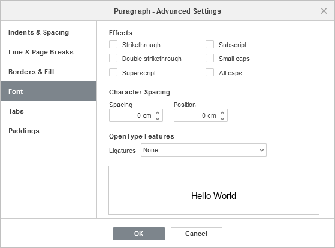

Primena stilova ukrašavanja fonta
U Uređivaču dokumenata, možete primeniti različite stilove ukrašavanja fonta pomoću odgovarajućih ikona na kartici Početna u gornjoj alatnoj traci.
Napomena: ako želite da primenite formatiranje na već postojeći tekst u dokumentu, selektujte ga mišem ili koristite tastaturu i primenite formatiranje.
| Podebljano | Koristi se da bi font bio podebljan i imao izraženiji izgled. | |
| Kurziv | Koristi se da bi font bio blago nagnut udesno. | |
| Podvučeno | Koristi se da bi tekst bio podvučen linijom ispod slova. | |
| Precrtano | Koristi se da bi tekst bio precrtan linijom koja prolazi kroz slova. | |
| Eksponent | Koristi se da bi tekst bio manji i postavljen u gornji deo reda teksta, npr. u razlomcima. | |
| Indeks | Koristi se da bi tekst bio manji i postavljen u donji deo reda teksta, npr. u hemijskim formulama. |
Da biste pristupili naprednim podešavanjima fonta, kliknite desnim tasterom miša i izaberite opciju Napredna podešavanja pasusa iz menija ili koristite link Prikaži napredna podešavanja na desnoj bočnoj traci. Zatim će se pojaviti prozor Pasus – Napredna podešavanja, a vi treba da pređete na karticu Font.
Ovde možete koristiti sledeće stilove i podešavanja ukrašavanja fonta:
- Precrtano – koristi se da bi tekst bio precrtan linijom koja prolazi kroz slova.
- Dvostruko precrtano – koristi se da bi tekst bio precrtan duplom linijom.
- Eksponent – koristi se da bi tekst bio manji i postavljen u gornji deo reda teksta, npr. u razlomcima.
- Indeks – koristi se da bi tekst bio manji i postavljen u donji deo reda teksta, npr. u hemijskim formulama.
- Mala velika slova – koristi se da bi sva slova bila prikazana kao mala verzija velikih slova.
- Sva velika slova – koristi se da bi sva slova bila prikazana velikim slovima.
- Razmak – koristi se za podešavanje razmaka između znakova. Povećajte podrazumevanu vrednost za Prošireni razmak ili je smanjite za Suženi razmak. Koristite strelice ili unesite potrebnu vrednost u polje.
- Pozicija – koristi se za podešavanje vertikalnog pomeranja znakova u redu. Povećajte podrazumevanu vrednost da biste pomerili znakove nagore, ili je smanjite da biste ih pomerili nadole. Koristite strelice ili unesite potrebnu vrednost u polje.
- Ligature – spojena slova reči napisanih u nekom od OpenType fontova. Imajte u vidu da korišćenje ligatura može poremetiti razmak između znakova. Dostupne opcije su:
- Nijedna
- Samo standardne (uključuje “fi”, “fl”, “ff”; poboljšava čitljivost)
- Kontekstualne (primenjuju se na osnovu okolnih slova; poboljšava čitljivost)
- Istorijske (sa više ukrasa i zakrivljenih linija; smanjuje čitljivost)
- Diskrecione (ukrasne ligature; smanjuje čitljivost)
- Standardne i kontekstualne
- Standardne i istorijske
- Kontekstualne i istorijske
- Standardne i diskrecione
- Kontekstualne i diskrecione
- Istorijske i diskrecione
- Standardne, kontekstualne i istorijske
- Standardne, kontekstualne i diskrecione
- Standardne, istorijske i diskrecione
- Kontekstualne, istorijske i diskrecione
- Sve
Sve promene će biti prikazane u polju za pregled ispod.
